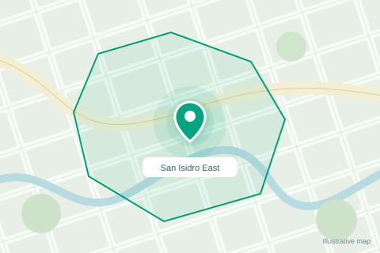

A LITTLE PEACE OF MIND, IN YOUR POCKET
A little closer.
Even from afar.
Your loved ones’ health readings, watch location, and safety alerts. Together in one calm, connected family space.
Add to your Home Screen on iPhone & Android
Good morning!
Your family, a little closer.
74 years · Female
Inside safe zone72bpm
98%

Sample watch update · 12s ago
Location
A clearer view of where they are.
San Isidro East
Current and last-known locations are labeled in the real app.Health
The latest readings, in one view.
72 bpm
98 %
Illustrative readings only. In the real app, check the last-update time alongside every reading.
Alerts
Health, location, and safety updates.
No sample alerts
Try the preview below to explore a safety alert.
Check on your family member
This is an example of a safety alert. It has not been sent to anyone.
The real app keeps safety incidents and response controls together.
My profile
Your account and connected seniors.
family@example.test
Example family accountMy seniors
Approved watch access
Approved watch access
One family account can monitor more than one approved senior.
Interactive preview · Sample accounts & readings
Your family. One clear view.Choose a senior and explore the latest watch update.
Designed around what matters.
Health Location SafetyEXPLORE THE DETAILS
Small details.
A clearer picture.
Try a sample watch update, explore a safe zone, or follow a safety alert from arrival to response.
More than a number.
See the context.
Pulse rate, blood oxygen, and when the watch last sent an update. Because the time matters, too.
Try a different sampleIllustrative data only. No watch is connected to this website.
72bpm
98%
Read the numbers alongside their last-update time.
A point on a map.
A bit more meaning.
Move the sample watch across the boundary to see how a safe zone adds context. Then try a last-known position.
Drag the pin, click the map, or use the slider. This is an illustrative map, not a tracking service.
A sample GPS point within the boundary.
From an alert
to a check-in.
Explore the path from a sample SOS to a response. In the real app, review the incident and check on your loved one before confirming.
No alert is sent. No record is saved.
A little more prepared.
Create a sample alert to see what comes next.
- 1Review the incident
- 2Check on your loved one
- 3Confirm the response
A FAMILY SPACE, MADE SIMPLE
A few steps.
A closer connection.
Keep more than one loved one connected to the same family account, with approved access to each watch.
- 01
Make it your family space
Create your family account and confirm your email. Family and barangay accounts use separate email addresses.
- 02
Connect a senior’s watch
Request access to an existing senior or register a senior through the app. Barangay staff review new watch-access requests.
- 03
Check in. Stay informed.
Choose a linked senior to see the latest readings, location, watch battery, and safety incidents.
TAKE SAFEWATCH WITH YOU
Your family space.
One tap away.
Add SafeWatch to your phone’s Home Screen. Open it like an app, right where you need it.
Open SafeWatch to installInstall from the family app’s page. This showcase is a separate website.
Your family space.
A little closer, even from afar.
Add the family app to your Home Screen.
A little closer.
Right on your Home Screen.
Walkthrough complete. You’re ready to add the real family app.
GUIDE COMPLETE · APP NOT YET INSTALLEDStart with the family app’s page on your phone.
From this screen
to your phone.
Scan with your phone’s camera.
Follow the steps for your device.

A FEW GOOD QUESTIONS
A little clarity
before you start.
Here’s what to know about accounts, watch updates, and adding SafeWatch to your phone.
6 questions, a little clarity.
Do I need the App Store or Google Play?
SafeWatch Family is a web app. Open the family app on your iPhone or Android phone and use the installation guide above to add it to your Home Screen. There is no store download in this setup.
Can I monitor more than one senior?
Yes. One family account can have multiple approved senior links. Use the senior selector to switch whose watch readings, location, and alerts you are viewing.
Why does a new watch link need approval?
Barangay staff review new access requests before the senior’s health and location data become available to your account. You can check the request status in My seniors.
What does “last known location” mean?
A new GPS fix may not be available. SafeWatch can retain a previously received position and label it as last known. Check the location status and update time instead of treating an old point as a current position.
Does SafeWatch need an internet connection?
Your phone needs a working internet connection to receive new watch readings and safety incidents. Updates also depend on the watch, gateway, and network. Installing the app does not make monitoring data available offline.
Are the readings in this preview real?
No. The interactive preview uses sample accounts and illustrative readings. It does not access patient records or send alerts. In the real app, watch readings support monitoring and do not provide a medical diagnosis.
No matching questions yet.
Try “install”, “senior”, or “location”.
Care that stays close.
A clearer family space starts with one small step.
Open SafeWatch Family